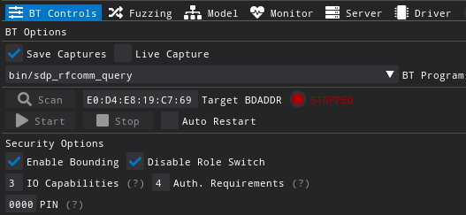
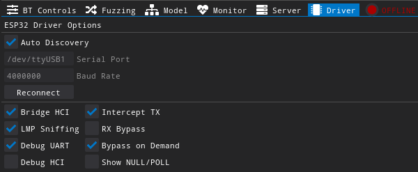
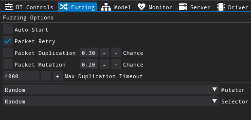
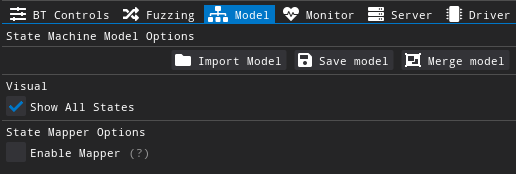
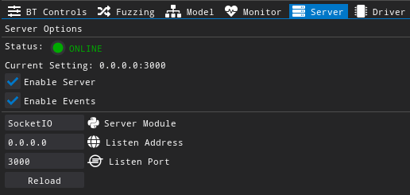

# 🔀 Fuzzers
# Bluetooth Classic
You can start the fuzzer as follows:
sudo bin/bt_fuzzer --scan # Scan for targets (BDAddress) for 15 seconds
sudo bin/bt_fuzzer # Start fuzzer with graphical user interface (GUI)
sudo bin/bt_fuzzer --no-gui --autostart --target=E8:D0:3C:94:2C:66 # Start fuzzer without GUI
# BT Command line options
sudo bin/bt_fuzzer --help
Bluetooth Classic Fuzzer (Baseband, LMP, L2CAP, etc)
Usage:
BT Fuzzer [OPTION...]
--help Print help
--default-config Start with default config
--autostart Automatically start (default: true)
--no-gui Start without GUI
--test-webview Test GUI webview performance (requires internet)
--live-capture Open wireshark in live capture mode
--exploit [=arg(=)] Exploit Name
--list-exploits List all exploits
--host arg Host BDAddress
--host-port arg Host serial port name of BT Interface
(ESP-WROVER-KIT)
--random_bdaddress Enable/Disable host BDAddress randomization
--target arg Target BDAddress (default: /dev/ttyUSB1)
--target-port arg Target serial port name to detect crashes
(default: /dev/ttyUSB2)
--target-baud arg Target baud rate (default: 115200)
--bounding Enable/Disable Bounding (default: true)
--iocap arg IO Capabilities (default: 3)
--authreq arg Authentication Request flag (default: 3)
--scan Scan BT Targets
# BT Options

Save Captures (Checkbox) - When option is enabled, capture file is saved on
logs/Bluetooth/capture_bluetooth.pcapngLive Capture (Checkbox) - Opens Wireshark in live capture mode
Scan (Button) - Scan for BT targets (TODO)
BT Program (Combo box) - Programs or "Profiles" which connect with a target device or wait for a connection. The available BT programs are available on the table below:
BT Program Connection Type PROFILE bin/sdp_rfcomm_query Initiator / Master SDP / RFCOMM bin/spp_counter Advertiser / Slave SDP / RFCOMM bin/a2dp_sink_demo Advertiser / Sound Sink A2DP bin/a2dp_source_demo Initiator / Sound Source A2DP Target BDADDR (Text box) - Target of the device to connect. Only applied for BT programs which initiates the connection. This is not applied for programs that wait for connections such as
bin/spp_counterorbin/a2dp_sink_demo.Start / Stop (Buttons) - Start or stop the previously selected BT program
Auto Restart (Checkbox) - Automatically restart BT program in case of a hang (WIP)
# Security Options
Enable Bounding (Checkbox) - Enabled BT Pairing. If disable all the next options has no effect.
Disable Role Switch (Checkbox) - Forces connection to reject any attempts to perform role switching. This ensure that once the master connects to a slave, their roles stay the same during the session. Exploits such as KNOB requires this so the master (being the fuzzer) can mutate the
LMP_max_encryption_key_size_reqpacket. Disable this options if the slave does not accept the connection without role switching.IO Capabilities (Text box) - Selects IO capabilities of the fuzzer during the pairing process according to the following:
- Display Only = 0
- Display Yes No = 1
- Keyboard Only = 2
- No Input No Output = 3 (Default)
- Unknown = 256
Auth. Requirements (Text box) - Flag which indicates the authentication parameters during the pairing process.
- No MitM, No Bouding = 0
- MitM, No Bouding = 1
- No MitM, Dedicated Bouding = 2
- MitM, Dedicated Bouding = 3
- No MitM, General Bouding = 4
- MitM, General Bouding = 5
PIN (Text box) - 4 digit PIN number to be used during pairing (legacy pairing method).
The aforementioned BT options are loaded from configs/bt_config.json on the following attributes:
{
"config": {
"Bluetooth": {
// BT Options
"EnableBounding": true,
"AuthReq": 4,
"DisableRoleSwitch": true,
"IOCap": 3,
"Pin": "0000",
"TargetBDAddress": "E0:D4:E8:19:C7:69",
// TODO: Store a list of targets
"TargetBDAddressList": [
"24:0A:C4:61:1C:1A",
"E0:D4:E8:19:C7:69"
]
// ...
}
// ...
}
# Driver Options

- Auto Discovery (Checkbox) - Tries to auto-discover which serial port the ESP32 is connected by probing a version string. Disable this if facing any issues with ESP32 being recognised.
- Serial Port (Text box) - Defines serial port path for ESP32. This is automatically changed when Auto Discovery is enabled.
- Baud Rate (Text box) - Defines baud rate of the chosen serial port for ESP32. It defaults to 4000000 and is automatically changed when Auto Discovery is enabled.
- Reconnect (Button) - Attempts re-connection with serial port. This is usually not required as the fuzzer tries to re-open the serial port each second.
# Advanced Driver Options
WARNING
The defaults for advanced options are recommended to be used unless debugging the firmware or manually experimenting with BT.
Bridge HCI (Checkbox) - Creates raw pseudo-terminal (serial bridge) which can be used to connect a BT stack to the fuzzer. The pseudo terminal is created on /dev/pts folder and advertised by the fuzzer on the "Events" window.
LMP Sniffing (Checkbox) - Allows firmware to send LMP packets. This option is required for the fuzzer. It can only be disabled if using ESP32 as a standalone HCI BT device. Not only LMP packets are sniffed but also relevant baseband information such as BT header, channel number, device role, channel speed (table type - ptt) and TX/RX encryption.
Info
ESP32 is a common HCI device at startup, but the fuzzer enables LMP Sniffing mode for its use. This means that you can integrate this ESP32 firmware into standard HCI tests by enabling
Bridge HCIandLMP Sniffingthen sending raw HCI commands on the pseudo-terminal created by the fuzzer (on/dev/pts/).Debug UART (Checkbox) - Outputs serial ASCII messages coming from the firmware. This is useful to get crash traces from the firmware.
Debug HCI (Checkbox) - Prints HCI hex encoded messages between host and firmware.
Intercept TX (Checkbox) - Intercept BT packets from the firmware before they are sent over the air. This is required for "Packet Mutation" to work.
Low Latency Required
Intercept TX requires a high speed USB adaptor such as FT2232H. As a general rule, a good latency is below 600us.
RX Bypass (Checkbox) - Completely disables the firmware to respond to LMP packets while a connection is maintained with the target BT device. This can be used to send arbitrary LMP packets from the host since the very first LMP interactions without interference from ESP32 own BT stack.
TIP
RX Bypass is a powerful feature which can be used for many used besides fuzzing. Applications range from exploits, protocol compliance testing, BT experimentation, LMP debugging over-the-air, etc. This feature is quite stable.
Bypass on demand (Checkbox) - Temporarily disable LMP reception on the firmware when duplicated packets are sent. This prevents random firmware crashes as ESP32 own BT stack may not be prepared to receive out-of-order response packets from the target device.
Show NULL / POLL (Checkbox) - (Experimental feature) Enables receiving BT baseband POLL and NULL messages between ESP32 and target device. This packets are also saved to BT capture file and are shown on the "TX / RX" view window. Depending on the Poll time, it can log too many packets, thus significantly increasing the BT capture file.
The aforementioned advanced BT driver options are loaded from configs/bt_config.json on the following attributes:
{
"config": {
"Bluetooth": {
"BridgeHCI": true,
"InterceptTX": true,
"LMPSniffing": true,
"RXBypass": false,
"RXBypassOnDemand": true,
"SaveHCIPackets": false, // Saves the HCI only capture from BT stack
"SerialAutoDiscovery": true,
"SerialBaudRate": 4000000,
"SerialEnableDebug": true,
"SerialEnableDebugHCI": false,
"SerialPort": "/dev/ttyUSB1",
"ShowNullPollPackets": false
// ...
},
// ...
}
}
# Common Options
# Fuzzing

- Auto Start (Checkbox) - Automatically starts fuzzing a selected target (via GUI or config. file) when starting the fuzzer
- Packet Retry (Checkbox) - Resend packets that are not replied by the target. Timeout in milliseconds can be adjusted via parameter
PacketRetryTimeoutMSonconfigs/bt_config.json. - Packet Duplication (Checkbox & Number) - Enables packet duplication (out of order). The "Chance" number defines the probability per packet for a duplication to occur in the future.
- Packet Mutation (Checkbox & Number) - Enables packet mutation. The "Chance" number defines the probability per packet for a mutation to occur.
- Max Duplication Timeout (Text box & Number) - This defines the maximum time for a duplicated to be sent after the original.
- Mutator (Combo box) - Defines mutation operator (WIP)
- Selector (Combo box) - Defines selector for the operators (WIP)
The aforementioned fuzzing options are loaded from configs/bt_config.json on the following attributes:
{
"config": {
// ...
"Fuzzing": {
"DefaultDuplicationProbability": 0.3,
"DefaultMutationProbability": 0.2,
"MaxDuplicationTime": 4000,
"PacketRetry": true,
"PacketRetryTimeoutMS": 1000,
"enable_duplication": false,
"enable_mutation": false
}
// ...
}
# Model

Import Model (Button) - Import and Load state machine model according to
State Mappingparameters defined onconfigs/bt_config.json. The supported formats are .pcap, .pcapng and .jsonSave Model (Button) - Save current state into both .json and .dot formats. The saved .json file can be later imported whereas .dot is used for state machine visualisation by any dot compatible viewer software.
Merge Modle (Button) - Merge multiple state machine models into a single one. Similar to "Import Model" but you can select multiple files
Show All States (Checkbox) - Whether to show all states or just few (previous and next states only) on the GUI state viewer window. This has no effect if the fuzzer is running without graphical interface (headless mode)
Enable Mapper (Checkbox) - Enables State mapping during the fuzzing process. Whenever new transitions are not found during the fuzzing process, new paths will be created for the model.
WARNING
When using state mapper, always remember to save your model so you can use it later via "Import Model" button. Alternativally you can save the model with the same name of BT program so it loads automatically whenever the fuzzer starts. The default model path is
configs/models/bt/
The aforementioned model options are loaded from configs/bt_config.json with the following attributes:
{
"config": {
// ...
"StateMapper": {
"Mapping": [
{
"Filter": "btsdp", // Filter rule
"LayerName": "SDP", // Layer name indicated on state machine
"StateNameField": "btsdp.pdu" // Field name which contains the packet types
},
// ...
],
"SaveFolder": "configs/models/bt/",
"ShowAllStates": true
},
// ...
}
}
# Server

- Status (LED) - Indicates if the server is running
- Enable Server (Checkbox) - Enables or disables the server. Toggling this has immediate effect.
- Enable Events (Checkbox) - Allow server to send event to clients. Disabling this requites that clients poll the server instead.
- Server Module (Text box) - Defines python script to use as the server on
modules/serverfolder. Changing this requires pressingreloadto take effect. - Listen Address (Text box) - Defines the server listen address. Defaults to
0.0.0.0to listen on all IPv4 addresses on local machine. Changing this requires pressingreloadto take effect. - Listen Port (Text box) - Defines the server listen port. Defaults to 3000. Changing this requires pressing
reloadto take effect. - Reload (Button) - Reloads previous configures parameters except for "Enable Server" and "Enable Events" which take effect immediately.
The aforementioned server options are loaded from configs/bt_config.json on the following attributes:
{
"config": {
// ...
"ServerOptions": {
"Enable": true,
"EnableEvents": true,
"ListenAddress": "0.0.0.0",
"Logging": false, // Allows server script to print log messages
"Port": 3000,
"Type": "SocketIO"
},
// ...
}
}